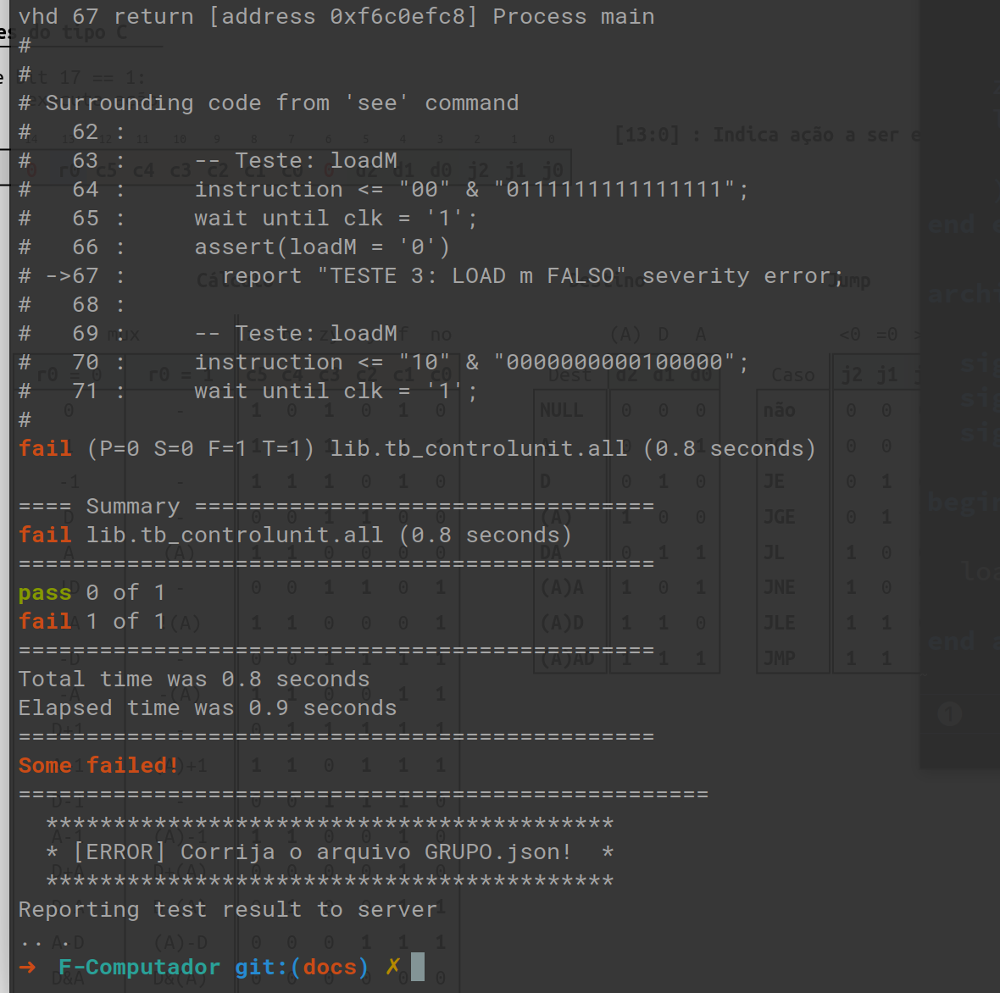
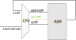

Lab 15: Control Unit¶
Antes de começar
Toda vez que um novo projeto começar será necessário realizar algumas configurações no repositório do grupo, vocês devem seguir para o documento: Util/Começando novo Projeto e depois voltar para esse lab.
- Não seguir sem realizar a etapa anterior.
A unidade de controle é o periférico da CPU responsável por decodificar uma instrução (linguagem de máquina) e realizar as modificações necessárias no HW (mux, load, ULA, registradores, PC) a fim de executar tal operação.

O control unit controla todos os componentes internos da nossa CPU, é ele que por exemplo seleciona como vai estar os sinais do seletor dos mux (muxALUI/I/muxAM/D, qual operação a ULA irá executar (zr.nx.zy.ny.f.no), onde o dado será salvo (loadD, loadA, writeM, loadPC) e se é para executar uma operação de salto (loadPC).
A figura a baixo ilustra tudo que o control unit controla.

Note
Note que os sinais do comparador da ULA: zr e ng também vão para a unidade de controle. É a partir do valor deles que o hardware decide se vai ou não ocorrer uma operação de salto.
ControlUnit¶
Vamos implementar partes da unidade de controle.
loadD (exemplo)¶
Exemplo!
Tip
Utilize o documento Z01/Instruction Set para resolver esse lab.
O sinal loadD indica quando o registrador D deve armazenar um novo sinal. Para isso, devemos verificar se a instrução em questão que está sendo decodificada pelo 'controlUnit' é do tipo comando (C), essa verificação é feita pelo bit mais significativo da instrução (bit17).
Uma vez que detectado uma instrução do tipo C, devemos verificar se o comando que ela representa carrega a operação de salvar em %D, verificamos isso pelo bit d1, que indica se irá ou não ocorrer um carregamento em %D.

Com esses dados conseguimos criar a tabela verdade a seguir e extrair a equação que rege esse sinal.
bit 17 |
bit 4 |
loadD |
|---|---|---|
| 0 | X | 0 |
| 1 | 0 | 0 |
| 1 | 1 | 1 |
Podendo ser traduzido para o código em VHDL (via soma dos produtos):
loadD <= instruction(17) and instruction(4);
Nesse lab iremos fazer parte do ControlUnit, ele não deve passar em todos os testes.
Implementando e testando
- Abra o arquivo
/Projetos/F-Computador/src/controlUnit.vhd - Insira a implementação anterior do
loadDna arquitetura - Teste com o comando
./testeHW.pydescomentando a respectiva linha emconfig_testes.txt - Deve passar no TESTE 1 e TESTE 2
- Deve parar para no TESTE 3
O resultado deve ser como a seguir:

loadM¶
Vamos agora implementar o sinal loadM, esse sinal é o que controla se irá ocorrer uma operação de escrita na memória RAM.

Implementando e testando
- Entenda os bits envolvidos
- Escreva uma tabela verdade
- Encontre a equação e implemente no
controlUnit.vhd - Teste com o comando
./testeHW.py - Deve passar no TESTE 3 e TESTE 4
- Deve parar para no TESTE 4
loadA¶
Agora implemente o loadA, esse sinal que controla o load do registrador A.
Implementando e testando
- Entenda os bits envolvidos
- Escreva uma tabela verdade
- Encontre a equação e implemente no
controlUnit.vhd - Teste com o comando
./testeHW.py - Deve passar no TESTE 5 e TESTE 6
- Deve parar para no TESTE 7
muxALUI_A¶
Esse sinal (muxALUI_A) controla o mux que seleciona qual o sinal que entra no registrador %A, a entrada 0 do mux é o sinal que sai da ULA e o sinal 1 do mux são os bits [15..0] da instrução.

Tip
Com esse sinal implementando, nossa CPU já suporta a instrução leaw $x, %A
Implementando e testando
- Entenda os bits envolvidos
- Escreva uma tabela verdade
- Encontre a equação e implemente no
controlUnit.vhd - Teste com o comando
./testeHW.py - Deve passar no TESTE 7 e TESTE 8
- Deve parar para no TESTE 9
zx¶
Agora faça o sinal zx que controla o zerador do sinal x da ULA.
Implementando e testando
- Entenda os bits envolvidos
- Escreva uma tabela verdade
- Encontre a equação e implemente no
controlUnit.vhd - Teste com o comando
./testeHW.py - Deve passar no TESTE 9 e TESTE 10
- Deve parar para no TESTE 11
Memory IO¶
O componente memory IO é a 'memória' do nosso computador. Interno nesse módulo possuímos além da memória RAM, outros componentes tais como: tela, chave, leds. Lembrando que para a CPU, não existe separação entre o que é memória e o que é periférico.
Os periféricos internos do memoryIO são:
- Tela (
screen.vhd)- responsável por controlar o LCD
- RAM (
ram16k.vhd)- memória RAM de 16k endereços
- SW
- chaves da FPGA
- LED
- LEDs da FPGA
screen e ram16k possuem a interface detalhada a seguir:

Note
Os sinais do tipo LCD_ da screen são conectados diretamente ao LCD, via portmap.
O componente memoryIO possui a seguinte entidade:

Estudando!¶
Warning
Discuta, pense e escreva a solução antes de ver a resposta.
-
Pense e discuta com seus colegas o
memoryIO. -
Dos sinais de entrada do
memoryIOqual define qual periférico (RAM/LCD/SW/LED) será acessado pela CPU? Explique.
Resposta
O sinal em questão é o address, pois os periféricos são mapeados em endereços diferentes, e é esse sinal que define qual periférico a CPU está querendo acessar. Exemplo: se o sinal address = 1024, a CPU está realizando uma operação na memória RAM, mas se o sinal address = 21184 isso indica que a CPU está querendo acessar o LED.
- Para mais informações, leia Teoria/Z01 - Mapa de Memória.
- Qual sinal informa o
memoryIOque a CPU está realizando uma escrita?
Resposta
É o writeM, se 1 indica que a CPU quer realizar uma escrita, caso contrário é uma leitura.
- Quais são suas entradas e saídas do LCD que o memoryIO controla? (tudo tirando o que começa com LCD_)
Resposta
DISPLAY: Screen port map (
RST => RST,
CLK_FAST => CLK_FAST,
CLK_SLOW => CLK_SLOW,
INPUT => INPUT,
LOAD => LOAD_DISPLAY,
ADDRESS => ADDRESS(13 downto 0),
LCD_INIT_OK => LCD_INIT_OK,
LCD_CS_N => LCD_CS_N ,
LCD_D => LCD_D,
LCD_RD_N => LCD_RD_N,
LCD_RESET_N => LCD_RESET_N,
LCD_RS => LCD_RS,
LCD_WR_N => LCD_WR_N
);
input: são os px a serem escritosload: se é para atualizar os pxadddress: quais px serão escritos
Note que esses sinais são os mesmos sinais de uma memória RAM, porém sem a parte de leitura. O LCD como foi implementando, não suporta que realizemos a leitura de seus pxs.
- Como funciona o LED?
Resposta
O LED é um endereço da memória, como ele 'armazena' o dado, deve ser implementando com um registrador.
- Faça um esboço (diagrama) de como o
memoryIOimplementará a saídaLED
| |
LOAD ---> |
ADDRESS -> |
INPUT ---> |
| ---> LED
| |
| |
| |
| |
Pinos do memoryIO:
- LOAD: indica escrita
- ADDRESS(16 downto 0): endereço da escrita
- INPUT(16 downto 0): dado a ser escrito
- LED(9 downto 0): Valor dos LEDs da FPGA
CPU¶
Proponha uma modificação na CPU do nosso Z01.1 que:
- Adiciona mais um registrador (
%S) (onde é melhor?) - Você teria que modificar a linguagem de máquina do nosso HW. Proponha uma solução.
- Possibilita %D endereçar a memória
movw %A, (%D)
- Possibilite fazer carregamento efetivo em %D
leaw $5, %D
Para cada modificação faça o desenho da nova CPU.
Extras¶
nop¶
Como o controlUnit controla a CPU para realizar a operação de NOP?
movw %D, %A e jg %D ao mesmo tempo¶
Nossa CPU suportaria executar simultaneamente a instrução movw %D, %A e ao mesmo tempo a instrução jg %D?
loadPC¶
Quais sinais o influenciam?